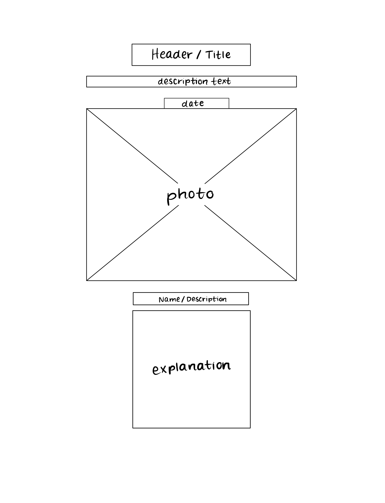
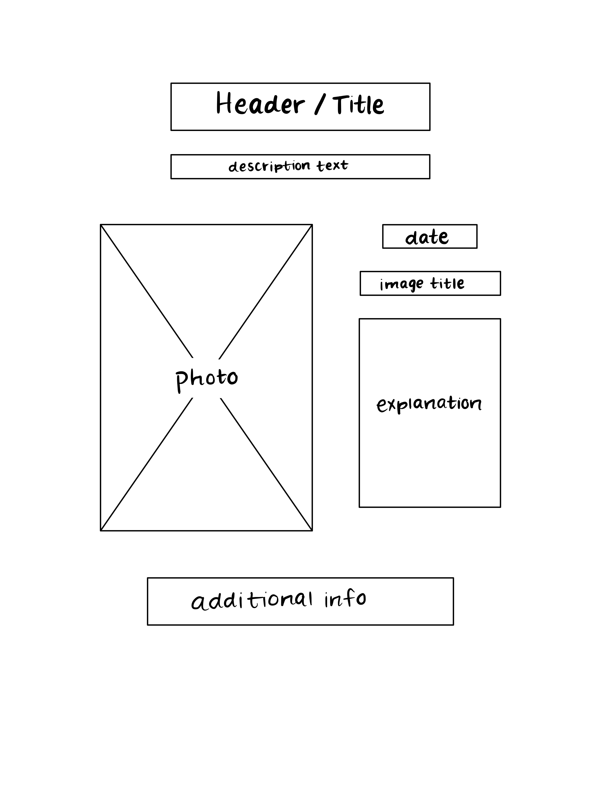

Astronomy Picture of the Day
-
Using the favorite website you chose in homework 1, create a wireframe for one page of it using pen/paper, PowerPoint, or any your tool of choice. (use the 'img' tag!) Make sure to let us know what the name of your website is (Use the 'p' tag!)
 -
Try to improve the website you've chosen, and create a redesigned wireframe of one page for the same website using the principles of visual hierarchy that you learned from the article.

-
What is the goal of the website? Who is it intended for? How does the design accomplish this? Write 2-3 sentences answering these questions. (Use the 'p' tag again!)
The goal of this website is to share a daily astronomical photograph with the public, in which each day features a new photo. The website accomplishes this by showing a new photo each day with the date and a description of what is pictured with some sort of accompanying explanation.
-
Write 2-3 sentences about what problems your redesign addressed, and how it solved them.
My redesign of this website's wireframe is intended to provide clarity and make it easier for users to read the content on the page. The original website is poorly layed out and lacks white space, therefore I changed it to not only be more aesthetic but also to arrange the information in a logical manner that would allow users to see the necessary information, such as the image description and explanation.
NOTE: Make sure to include the wireframe images in the website and don't just put it in your assets folder!
Your wireframes should look something like this: